Gridap.ReferenceFEs
Contents
Reference FE summary
A reference finite element is defined using the following signature
Gridap.ReferenceFEs.ReferenceFE — Method
ReferenceFE(name::ReferenceFEName[, T::Type], order; kwargs...)
ReferenceFE(name::ReferenceFEName[, T::Type], orders; kwargs...)
ReferenceFE(F::Symbol, r, k, [, T::Type]; kwargs...)Signatures defining a reference finite element (but yet unspecified cell polytope) from:
- an element
name, value typeTandorder(s), or - a FEEC family
F ∈ (:P⁻, :P, :Q⁻, :S), with polynomial orderrand form orderk.
Arguments
T: type of scalar components of the shape function values,Float64by default. For elements supporting Cartesian product space of a scalar one (e.g.lagrangian), this can be a tensor type likeVectorValue{2,Float64}.order::Int: the polynomial order parameter, ororders::NTuple{D,Int}: a tuple of order per space dimension for anysotropic elements.
Keyword arguments are element specific, except
rotate_90::Bool=false, set to true for div-conforming FEEC bases in 2D (only if k=1).nodal::Bool=false, for FEEC constructor, choice between moment DOFs (ModalScalarFEs) or Lagrangian/node-based DOFs (lagrangian/serendipity).
The following table summarizes the elements implemented in Gridap (legend below).
| Name | Gridap name | FEEC name | Polytopes | Order | Conformity |
|---|---|---|---|---|---|
| Lagrangian | lagrangian | 𝓟ᵣ⁽⁻⁾Λ⁰ | △ | ${r=o≥1, o}$ | :H1 |
| 𝓠ᵣ⁻Λ⁰ | $\square$ | ${r=o≥1, o}$ | :H1 | ||
WEDGE, PYRAMID | ${o≥1, o}$ | :H1 | |||
| Serendipity | serendipity | 𝓢ᵣΛ⁰ | $\square$ | ${r=o≥1, o}$ | :H1 |
| Bezier | bezier | 𝓟ᵣ⁻Λ⁰ | △ | ${r=o≥1, o}$ | :H1 |
| 𝓠ᵣ⁻Λ⁰ | $\square$ | ${r=o≥1, o}$ | :H1 | ||
| ModalC0 | modalC0 | 𝓠ᵣ⁻Λ⁰ | $\square$ | ${r=o≥1, o}$ | :H1 |
| Modal scalar | modal_lagrangian | 𝓟/𝓠ᵣ⁻Λ⁰ | △,$\square$ | ${r=o≥1, o}$ | :H1 |
modal_serendipity | SᵣΛ⁰ | $\square$ | ${r=o≥1, o}$ | :H1 | |
| Nédélec (first kind) | nedelec | 𝓟ᵣ⁻Λ¹ | TRI,TET | ${r=o+1≥1, r}$ | :Hcurl |
| 𝓠ᵣ⁻Λ¹ | QUAD,HEX | ${r=o+1≥1, r}$ | :Hcurl | ||
| Nédélec (second kind) | nedelec2 | 𝓟ᵣΛ¹ | TRI,TET | ${r=o≥1, r}$ | :Hcurl |
| Raviart-Thomas | raviart_thomas | 𝓟ᵣ⁻Λᴰ⁻¹ | TRI,TET | ${r=o+1≥1, r}$ | :Hdiv |
| 𝓠ᵣ⁻Λᴰ⁻¹ | QUAD,HEX | ${r=o+1≥1, r}$ | :Hdiv | ||
| Brezzi-Douglas-Marini | bdm | 𝓟ᵣΛᴰ⁻¹ | TRI,TET | ${r=o≥1, r}$ | :Hdiv |
| Crouzeix-Raviart | crouzeix_raviart | TRI | ${o=1, o}$ | :L2 | |
| discontinuous Lagrangian | lagrangian | 𝓟ᵣ⁻Λᴰ | △ | ${r-1=o≥0, o}$ | :L2 |
| 𝓟ᵣΛᴰ | △ | ${r=o≥0, o}$ | :L2 | ||
| 𝓠ᵣ⁻Λᴰ | $\square$ | ${r-1=o≥0, o}$ | :L2 | ||
kwarg space=:P | 𝓢ᵣΛᴰ | $\square$ | ${r=o≥0, o}$ | :L2 | |
| MINI bubble | bubble | △,$\square$ | ${o=1, 2}$ | :L2 | |
| Bezier, ModalC0 | as above | ${o≥0, o}$ | :L2 |
Legend
- Name: usual name of the element and link to its DefElement page, containing all the details defining the element and references.
- Gridap name: the name to use in the Gridap APIs (it is a
ReferenceFENamesingleton), with a link to the docstring of the element constructor. - FEEC name: name of the element family in the Periodic Table of the Finite Elements [1]
- Polytopes:
- △ simplices (
SEGMENT,TRI(triangle),TET(tetrahedron)) - $\square$ n-cubes (
SEGMENT,QUAD(quadridateral),HEX(hexahedron))
- △ simplices (
- Order: ( definition of $r$ and $o$; $k$ ) where
- $r$ is the FEEC polynomial degree parameter (if defined).
- $o$ is the
orderparameter of the non FEECReferenceFEconstructor (usingname::ReferenceFEName), - $k$ is the maximum polynomial order of the shape functions in one direction (Lagrange superdegree), defined in function of $r$ or $o$,
- Conformity: supported
Conformity. All the elements also implement:L2conformity.
Additional information
Anisotropic and Cartesian product elements
The lagrangian, modalC0 and bezier elements support anisotropic orders on QUAD and HEX, leveraging the tensor product basis in each dimension.
Also, a Cartesian product finite-element space is available for all the :H1 conforming elements, for all polytopes. It means that a tensor type (<:MultiValue) can be given as value type argument T, for example VectorValue{3,Float64} or SymTensorValue{2,Float64}.
The function space is the Cartesian product of the scalar space, where a copy of the scalar space is assigned to each independent component of the tensor, and same for the DOF. For example, the function space of ReferenceFE(SEGMENT, lagrangian, VectorValue{2,Float64}, 1) is { VectorValue(x₁,x₂) | x₁ ∈ 𝓟¹, x₂ ∈ 𝓟¹ }. Its basis is a direct sum basis of the scalar basis duplicated over each component: {VectorValue{1,0}, VectorValue{x,0}, VectorValue{0,1}, VectorValue{0,x} }
The modalC0 element has the particularity that the support of its shape-function can be scaled to be adapted to the physical element.
poly_type keyword argument
The lagrangian, nedelec, raviart_thomas, bdm, serendipity, and modal_scalar element constructors support the poly_type::Type{<:Polynomial} keyword argument, which gives the choice of the polynomial family to use as (pre-)basis for the approximation space of the element. This changes the basis but not the spanned polynomial space (for affine-mapped reference elements).
poly_type defaults to Bernstein on simplices and to ModalC0 on n-cubes (incl. SEGMENT), except for lagrangian and serendipity elements for which it defaults to Monomial.
mom_poly_type keyword argument
Additionally, the modal_scalar, nedelec, raviart_thomas, bdm element constructors support the mom_poly_type::Type{<:Polynomial} keyword argument, which gives the choice of the polynomial basis to use as "test" polynomials in the moment functionals defining the DoFs ($q$ in [1, eq. (2)]).
mom_poly_type defaults to poly_type.
change_dof keyword argument
The change_dof::Bool argument is available for reference FEs using moment based DoFs, to tell the constructor to use the polynomial basis directly as shape-functions basis, and to define the DoFs as a change of basis from the usual DoF (treating them as "pre-"DoFs). It is available, and defaults to true, for modal_scalar, nedelec, raviart_thomas and bdm elements. See the Geometric decompositions section for more detail.
The mom_poly_type and poly_type keywords change the choice of DoF basis when change_dof is false and true respectively, but not the DoF space (polynomial space dual).
Modal and nodal scalar reference elements
lagrangian, modalC0, bezier and serendipity are nodal elements. lagrangian and serendipity can be constructed via the constructor using FEEC notations by passing the keyword argument nodal=true.
By default, nodal is false, so these FEEC constructors return modal_scalar (ModalScalar{F}()) elements whose DOFs are the FEEC moments described in [1].
The ModalScalar elements support all poly_type, mom_poly_type and change_dof keyword arguments, while the nodal ones only support poly_type.
Bubble reference element
The BubbleRefFE currently implements bubble space for MINI element, but the bubble can be fine-tuned. The MINI element on TRIangle is documented here.
Gridap.ReferenceFEs — Module
Exported names
BDM, BDMRefFE, Bezier, BezierRefFE, Bubble, BubbleRefFE, CDConformity, CONT, CoVariantPiolaMap, Conformity, ContraVariantPiolaMap, CrouzeixRaviart, CrouzeixRaviartRefFE, CurlConformity, DISC, DivConformity, Dof, ExtrusionPolytope, GeneralPolytope, GenericLagrangianRefFE, GenericQuadrature, GenericRefFE, GradConformity, H1Conformity, HEX, HEX8, HEX_AXIS, INVALID_PERM, IdentityPiolaMap, L2Conformity, Lagrangian, LagrangianDofBasis, LagrangianRefFE, ModalC0, ModalC0RefFE, ModalScalar, ModalScalarRefFE, MomentBasedDofBasis, Nedelec, NedelecRefFE, PYRAMID, Polygon, Polyhedron, Polytope, Pullback, Pushforward, QUAD, QUAD4, Quadrature, QuadratureName, RaviartThomas, RaviartThomasRefFE, ReferenceFE, ReferenceFEName, SEG2, SEGMENT, Serendipity, SerendipityRefFE, TET, TET4, TET_AXIS, TRI, TRI3, VERTEX, VERTEX1, WEDGE, apply_face_signflip, bdm, bezier, bubble, compress_cell_data, compute_cell_to_modalC0_reffe, compute_face_orders, compute_lagrangian_reffaces, compute_monomial_basis, compute_nodes, compute_own_nodes, compute_own_nodes_permutations, compute_shapefuns, crouzeix_raviart, duffy, evaluate!, expand_cell_data, get_bounding_box, get_coordinates, get_diameter, get_dimrange, get_dimranges, get_dof_basis, get_dof_to_comp, get_dof_to_node, get_dofscale_setter_function, get_edge_tangent, get_extrusion, get_face_coordinates, get_face_dimranges, get_face_dofs, get_face_moments, get_face_nodes, get_face_nodes_dofs, get_face_own_dofs, get_face_own_dofs_permutations, get_face_own_funs, get_face_own_nodes, get_face_own_nodes_permutations, get_face_type, get_face_vertex_permutations, get_face_vertices, get_facedims, get_faces, get_facet_normal, get_facet_orientations, get_measure, get_name, get_node_and_comp_to_dof, get_node_coordinates, get_nodes, get_offset, get_offsets, get_order, get_orders, get_own_dofs_permutations, get_own_nodes_permutations, get_polytope, get_prebasis, get_reffaces, get_shapefuns, get_vertex_coordinates, get_vertex_node, get_vertex_permutations, get_weights, has_geometric_decomposition, is_P, is_Q, is_S, is_first_order, is_n_cube, is_simplex, lagrangian, linear_combination, maxdegree, modalC0, modal_lagrangian, modal_serendipity, nedelec, nedelec1, nedelec2, num_cell_dims, num_dims, num_dofs, num_edges, num_faces, num_facets, num_nodes, num_point_dims, num_points, num_vertices, raviart_thomas, return_cache, return_type, serendipity, simplexify, strang, tensor_product, test_dof, test_dof_array, test_lagrangian_reference_fe, test_polytope, test_quadrature, test_reference_fe, witherden_vincent, xiao_gimbutas,
Polytopes
Abstract API
Gridap.ReferenceFEs.Polytope — Type
abstract type Polytope{D} <: GridapTypeAbstract type representing a polytope (i.e., a polyhedron in arbitrary dimensions).
D is the polytope's dimension, defined as the smaller dimension of a flat hypersurface containing the polytope, e.g. a triangle in a 3D space is a Polytope{2} because it is contained in a 2D plane. D differs from the embedding dimension, that is the number of coordinates of its vertices.
We adopt the usual nomenclature for polytope-related objects. All objects in a polytope (from vertices to the polytope itself) are called n-faces or simply faces. The notation n-faces is used only when it is needed to refer to the object dimension n. Otherwise we simply use face. In addition, we say
- vertex (pl. vertices): for 0-faces
- edge: for 1-faces
- facet: for (
D-1)-faces
The following constants represent the main reference polytopes: VERTEX, SEGMENT (edge), TRI (triangle), QUAD (quadrilateral), TET (tetrahedron), HEX (hexahedron), WEDGE (triangular prism) and PYRAMID.
The Polytope interface is defined by overloading the following functions
get_faces(p::Polytope)get_dimranges(p::Polytope)Polytope{D}(p::Polytope,faceid::Integer) where Dget_vertex_coordinates(p::Polytope)(==)(a::Polytope{D},b::Polytope{D}) where D
And optionally these ones:
get_edge_tangent(p::Polytope)get_facet_normal(p::Polytope)get_facet_orientations(p::Polytope)get_vertex_permutations(p::Polytope)is_n_cube(p::Polytope)is_simplex(p::Polytope)simplexify(p::Polytope)
The interface can be tested with the function
There are two implementations, ExtrusionPolytope for usual reference polytopes ⊂ [0,1]ᴰ, and GeneralPolytope.
Gridap.ReferenceFEs.Polytope — Method
Polytope{D}(p::Polytope, faceid::Integer)Returns a Polytope{D} object representing the "reference" polytope of the D-face of p with id faceid. The value faceid refers to the numeration restricted to the dimension D (it starts with 1 for the first D-face).
Base.:(==) — Method
(==)(a::Polytope{D},b::Polytope{D}) where DReturns true if the polytopes a and b are equivalent. Otherwise, it returns false. Note that the operator == returns false by default for polytopes of different dimensions. Thus, this function has to be overloaded only for the case of polytopes a and b of same dimension.
Gridap.ReferenceFEs.get_bounding_box — Method
get_bounding_box(p::Polytope)Returns a tuple (pmin,pmax) with the minimum and maximum points of the axis-aligned bounding box containing the polytope p.
Gridap.ReferenceFEs.get_diameter — Method
get_diameter(p::Polytope)
get_diameter(p::Polytope, vertex_coords)
get_diameter(vertex_coords)Returns the diameter of the polytope p with coordinates vertex_coords, defined as the maximum distance between any two vertices of the polytope.
Gridap.ReferenceFEs.get_dimrange — Method
get_dimrange(p::Polytope, d::Integer)Indices range of the d-dimensional faces of p. Equivalent to get_dimranges(p)[d+1].
Gridap.ReferenceFEs.get_dimranges — Method
get_dimranges(p::Polytope) -> Vector{UnitRange{Int}}Given a polytope p it returns a vector of ranges. The entry d+1 in this vector contains the range of face ids for the faces of dimension d.
Examples
using Gridap.ReferenceFEs
ranges = get_dimranges(SEGMENT)
println(ranges)
# output
UnitRange{Int}[1:2, 3:3]Face ids for the vertices in the segment range from 1 to 2 (2 vertices), the face ids for edges in the segment range from 3 to 3 (only one edge with id 3).
Gridap.ReferenceFEs.get_edge_tangent — Method
get_edge_tangent(p::Polytope) -> Vector{VectorValue{D,Float64}}Given a polytope p, returns a vector of VectorValue objects representing the unit tangent vectors to the polytope edges, in the order of get_dimrange(p, 1).
Gridap.ReferenceFEs.get_face_coordinates — Method
get_face_coordinates(p::Polytope)
get_face_coordinates(p::Polytope, d::Integer)Return a vector containing, for each face of p, the coordinates of the vertices of that face.
If d is given, the returned vector only contains the data for the d-dimensional faces of p.
Gridap.ReferenceFEs.get_face_dimranges — Method
get_face_dimranges(p::Polytope)
get_face_dimranges(p::Polytope, d::Integer)Return a vector containing, for each face of p, the result of get_dimranges on the reference polytope of the face.
If d is given, the returned vector only contains the data for the d-dimensional faces of p.
Examples
2-faces of a pyramid
get_face_dimranges(PYRAMID,2)
# output
5-element Vector{Vector{UnitRange{Int64}}}:
[1:4, 5:8, 9:9] # one QUAD 2-face
[1:3, 4:6, 7:7] # and four TRI 2-faces
[1:3, 4:6, 7:7]
[1:3, 4:6, 7:7]
[1:3, 4:6, 7:7]Gridap.ReferenceFEs.get_face_type — Method
get_face_type(p::Polytope) -> Vector{Int}
get_face_type(p::Polytope, d::Integer) -> Vector{Int}Return a vector containing, for each face of p, the index in get_reffaces(p) of the reference polytope of that face.
If d is given, the returned vector contains the indices for the d-dimensional faces of p into get_reffaces(Polytope{d},p).
Examples
Get the unique polytopes for the facets of a wedge and identify of which type each face is.
using Gridap.ReferenceFEs
reffaces = get_reffaces(Polytope{2},WEDGE)
face_types = get_face_type(WEDGE,2)
println(reffaces)
println(face_types)
# output
Gridap.ReferenceFEs.ExtrusionPolytope{2}[TRI, QUAD]
[1, 1, 2, 2, 2]
The three first facets are of type 1, i.e, QUAD, and the last ones of type 2, i.e., TRI.
Gridap.ReferenceFEs.get_face_vertex_permutations — Method
get_face_vertex_permutations(p::Polytope)
get_face_vertex_permutations(p::Polytope, d::Integer)Return a vector containing, for each face of p, the result of get_vertex_permutations on the reference polytope of the face.
If d is given, the returned vector only contains the data for the d-dimensional faces of p.
Gridap.ReferenceFEs.get_face_vertices — Method
get_face_vertices(p::Polytope) -> Vector{Vector{Int}}
get_face_vertices(p::Polytope, d::Integer) -> Vector{Vector{Int}}Return a vector containing, for each face of p, the vector of indices of the vertices of that face.
If d is given, the returned vector only contains the data for the d-dimensional faces of p.
Gridap.ReferenceFEs.get_facedims — Method
get_facedims(p::Polytope) -> Vector{Int}Return a vector indicating the dimension of each face of p.
Examples
using Gridap.ReferenceFEs
dims = get_facedims(SEGMENT)
println(dims)
# output
[0, 0, 1]
The first two faces in the segment (the two vertices) have dimension 0 and the third face (the segment itself) has dimension 1
Gridap.ReferenceFEs.get_faces — Method
get_faces(p::Polytope, dimfrom::Integer, dimto::Integer) -> Vector{Vector{Int}}For dimfrom >= dimto, returns a vector that, for each face of p of dimension dimfrom, stores a vector of the ids of faces of dimension dimto on its boundary.
For dimfrom < dimto, returns a vector that, for each face of p of dimension dimfrom, stores a face ids vector containing the ids of the dimto-dimensional faces adjascent to (touching) it.
The numerations used in this function are the ones restricted to each dimension.
Examples
using Gridap.ReferenceFEs
edge_to_vertices = get_faces(QUAD,1,0)
println(edge_to_vertices)
vertex_to_edges_around = get_faces(QUAD,0,1)
println(vertex_to_edges_around)
# output
Array{Int,1}[[1, 2], [3, 4], [1, 3], [2, 4]]
Array{Int,1}[[1, 3], [1, 4], [2, 3], [2, 4]]Gridap.ReferenceFEs.get_faces — Method
get_faces(p::Polytope) -> Vector{Vector{Int}}Given a polytope p the function returns a vector of vectors defining the incidence relation of the faces in the polytope.
Each face in the polytope receives a unique integer id. The id 1 is assigned to the first 0-face. Consecutive increasing ids are assigned to the other 0-faces, then to 1-faces, and so on. The polytope itself receives the largest id which coincides with num_faces(p). For a face id iface, get_faces(p)[iface] is a vector of face ids, corresponding to the faces that are incident with the face labeled with iface. That is, faces that are either on its boundary or the face itself. In this vector of incident face ids, faces are ordered by dimension, starting with 0-faces. Within each dimension, the labels are ordered in a consistent way with the polyope object for the face iface itself.
Examples
using Gridap.ReferenceFEs
faces = get_faces(SEGMENT)
println(faces)
# output
Array{Int,1}[[1], [2], [1, 2, 3]]The constant SEGMENT is bound to a predefined instance of polytope that represents a segment. The face labels associated with a segment are [1,2,3], being 1 and 2 for the vertices and 3 for the segment itself. In this case, this function returns the vector of vectors [[1],[2],[1,2,3]] meaning that vertex 1 is incident with vertex 1 (idem for vertex 2), and that the segment (id 3) is incident with the vertices 1 and 2 and the segment itself.
Gridap.ReferenceFEs.get_facet_normal — Method
get_facet_normal(p::Polytope{D}) -> Vector{VectorValue{D,Float64}}Return a vector of VectorValues representing the unit outward normal vectors to the facets of p.
Gridap.ReferenceFEs.get_facet_orientations — Method
get_facet_orientations(p::Polytope) -> Vector{Int}Return a vector of integers of length num_facets(p). The facets whose vertices are ordered consistently with the outwards normal vector (w.r.t. right-hand rule convention) have value 1, and the others -1.
See also get_facet_normal and get_faces.
Gridap.ReferenceFEs.get_measure — Method
get_measure(p::Polytope)
get_measure(p::Polytope, vertex_coords)Returns the measure of the polytope p with coordinates vertex_coords.
Gridap.ReferenceFEs.get_offset — Method
get_offset(p::Polytope, d::Integer)Return the integer offset between a face id in the global numeration of p's faces to the numeration of p's faces of dimension d.
Equivalent to get_offsets(p)[d+1].
Gridap.ReferenceFEs.get_offsets — Method
get_offsets(p::Polytope{D}) -> Vector{Int}Return a vector whose d+1 entry is the integer offset between a face id in the global numeration of p's faces to the numeration of p's faces of dimension d, for d ∈ {0:D}.
Examples
using Gridap.ReferenceFEs
offsets = get_offsets(SEGMENT)
println(offsets)
# output
[0, 2] # The first vertex is at 1+0, the first edge at 1+2, in get_faces(SEGMENT)Gridap.ReferenceFEs.get_reffaces — Method
get_reffaces(p::Polytope) -> Vector{<:Polytope}
get_reffaces(::Type{Polytope{d}}, p::Polytope) -> Vector{<:Polytope{d}}Get a vector of the unique reference polytopes for the faces of p.
If d is given, the returned vector contains the polytopes for the d-dimensional faces of p only.
Examples
Get the unique polytopes constituting a triangle
using Gridap.ReferenceFEs
reffaces = get_reffaces(TRI)
println(reffaces)
# output
ExtrusionPolytope{2}[VERTEX, SEGMENT, TRI]Get the unique polytopes for the facets of a wedge.
using Gridap.ReferenceFEs
reffaces = get_reffaces(Polytope{2},WEDGE)
println(reffaces)
# output
ExtrusionPolytope{2}[TRI, QUAD]Gridap.ReferenceFEs.get_vertex_coordinates — Method
get_vertex_coordinates(p::Polytope) -> Vector{Point{D,Float64}}Return a vector of points containing the coordinates of the vertices of p.
Gridap.ReferenceFEs.get_vertex_permutations — Method
get_vertex_permutations(p::Polytope) -> Vector{Vector{Int}}Returns a vector of vectors containing all admissible permutations of the vertices of p. An admissible permutation is one such that, if the vertices of the polytope are re-labeled according to this permutation, the resulting polytope preserves the shape of the original one.
These permutation are used to iddentify every possile way a geometrical map may permute the vertices of the boundary faces of a reference polytope (of dimension ≤ 3) into the physical one. Only the iddentity permutation [1, 2, …, N] is returned for 3D polytopes with N vertices. Indeed, a (3≥D)-dimensional physical polytope 𝓟 is only mapped by one physical map, but its faces are mapped by the physical map of all adjascent elements.
Examples
using Gridap.ReferenceFEs
perms = get_vertex_permutations(SEGMENT)
println(perms)
# output
Array{Int,1}[[1, 2], [2, 1]]
perms = get_vertex_permutations(TET)
println(perms)
# output
Array{Int,1}[[1, 2], [2, 1]]The first admissible permutation for a segment is [1,2],i.e., the identity. The second one is [2,1], i.e., the first vertex is relabeled as 2 and the second vertex is relabeled as 1.
Gridap.ReferenceFEs.is_n_cube — Method
is_n_cube(p::Polytope) -> BoolGridap.ReferenceFEs.is_simplex — Method
is_simplex(p::Polytope) -> BoolGridap.ReferenceFEs.num_cell_dims — Method
num_cell_dims(::Type{<:Polytope{D}})
num_cell_dims(p::Polytope{D})Returns D.
Gridap.ReferenceFEs.num_dims — Method
num_dims(::Type{<:Polytope{D}}) = D
num_dims(p::Polytope{D}) = DReturns D.
Gridap.ReferenceFEs.num_edges — Method
num_edges(p::Polytope)Returns the number of edges of p.
Gridap.ReferenceFEs.num_faces — Method
num_faces(p::Polytope, d::Integer)Returns the number of faces of dimension d of p.
Gridap.ReferenceFEs.num_faces — Method
num_faces(p::Polytope)Returns the total number of faces of p (counting p itself).
Examples
num_faces(SEGMENT)
#output
3 # 2 vertices + 1 edge.Gridap.ReferenceFEs.num_facets — Method
num_facets(p::Polytope)Returns the number of facets of p.
Gridap.ReferenceFEs.num_point_dims — Method
num_point_dims(::Polytope)
num_point_dims(::Type{<:Polytope})Embedding dimension of a Polytope (type), i.e. number of coordinates of its vertices.
Gridap.ReferenceFEs.num_vertices — Method
num_vertices(p::Polytope)Returns the number of vertices of p.
Gridap.ReferenceFEs.simplexify — Method
simplexify(p::Polytope; kwargs...) -> ( Vector{Vector{Int}}, ref_simplex )Returns a partition of p into simplices. The returned couple contains the vector of each simplex connectivity array, and the reference simplex of the partition simplices. The node coordinates are that of p.
ExtrusionPolytopes of dimension ≤3 support the positive=true kwarg. If set to true, all resulting simplices will keep the orientation of the original polytope.
Gridap.ReferenceFEs.test_polytope — Method
test_polytope(p::Polytope{D}; optional::Bool=false) where DFunction that stresses out the functions in the Polytope interface. It tests whether the function in the polytope interface are defined for the given object, and whether they return objects of the expected type. With optional=false (the default), only the mandatory functions are checked. With optional=true, the optional functions are also tested.
Extrusion Polytopes
| Name | Extrusion | Nodes | Edges | Faces |
|---|---|---|---|---|
SEGMENT | (HEX,) | 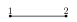 | ||
TRI | (TET,TET) | 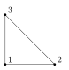 | 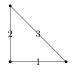 | |
QUAD | (HEX,HEX) | 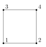 | 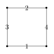 | |
HEX | (HEX,HEX,HEX) | 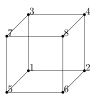 | 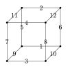 | 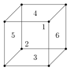 |
TET | (TET,TET,TET) | 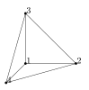 | 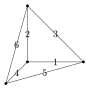 | 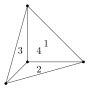 |
WEDGE | (TET,TET,HEX) | 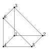 | 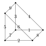 | 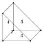 |
PYRAMID | (HEX,HEX,TET) | 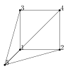 | 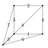 | 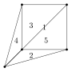 |
Gridap.ReferenceFEs.ExtrusionPolytope — Type
struct ExtrusionPolytope{D} <: Polytope{D}
extrusion::Point{D,Int}
# + private fields
endConcrete type for polytopes that can be represented with an "extrusion" tuple. The underlying extrusion is available in the field extrusion. Instances of this type can be obtained with the constructors
ExtrusionPolytope are used as reference polytopes because their coordinate space is their embedding space (the embeding dimension is the polytope dimension). Furthermore, the coordinates are determined by the extrusions.
Gridap.ReferenceFEs.ExtrusionPolytope — Method
ExtrusionPolytope(extrusion::Int...)Generates an ExtrusionPolytope from the tuple extrusion. The values in extrusion are either equal to the constant HEX_AXIS or the constant TET_AXIS.
Examples
Creating a quadrilateral, a triangle, and a wedge (triangular prism)
using Gridap.ReferenceFEs
quad = ExtrusionPolytope(HEX_AXIS,HEX_AXIS)
tri = ExtrusionPolytope(TET_AXIS,TET_AXIS)
wedge = ExtrusionPolytope(TET_AXIS,TET_AXIS,HEX_AXIS)
println(quad == QUAD)
println(tri == TRI)
println(wedge == WEDGE)
# output
true
true
true
Gridap.ReferenceFEs.Polytope — Method
Polytope(extrusion::Int...)Equivalent to ExtrusionPolytope(extrusion::Int...).
Gridap.ReferenceFEs.HEX — Constant
const HEX = Polytope(HEX_AXIS,HEX_AXIS,HEX_AXIS)Gridap.ReferenceFEs.HEX_AXIS — Constant
Constant to be used in order to indicate a hex-like extrusion axis.
Gridap.ReferenceFEs.PYRAMID — Constant
const PYRAMID = Polytope(HEX_AXIS,HEX_AXIS,TET_AXIS)Gridap.ReferenceFEs.QUAD — Constant
const QUAD = Polytope(HEX_AXIS,HEX_AXIS)Gridap.ReferenceFEs.SEGMENT — Constant
const SEGMENT = Polytope(HEX_AXIS)Gridap.ReferenceFEs.TET — Constant
const TET = Polytope(TET_AXIS,TET_AXIS,TET_AXIS)Gridap.ReferenceFEs.TET_AXIS — Constant
Constant to be used in order to indicate a tet-like extrusion axis.
Gridap.ReferenceFEs.TRI — Constant
const TRI = Polytope(TET_AXIS,TET_AXIS)Gridap.ReferenceFEs.VERTEX — Constant
const VERTEX = Polytope()Gridap.ReferenceFEs.WEDGE — Constant
const WEDGE = Polytope(TET_AXIS,TET_AXIS,HEX_AXIS)Gridap.ReferenceFEs.get_extrusion — Method
get_extrusion(p::ExtrusionPolytope)Return the vector of the extrusions defining p. See also ExtrusionPolytope.
Gridap.ReferenceFEs.next_corner! — Method
Sweep through the D-Densional hypercube recursively, collecting all simplices.
We represent vertices as bit patterns. In D Densions, the lowermost D bits are either zero or one. Interpreted as integer, this labels the vertices of the hypercube from the origin ("bottom") 0 to the diagonally opposite vertex ("top") 2^D-1.
Each simplex contains both the bottom vertex 0 as well as the top vertex 2^D-1. Its other vertices trace a path from the bottom to the top. The algorithm below finds all possible paths.
simplicesis the accumulator where the simplices are collected.verticesis the current set of vertices as we sweep from the origin to the diagonally opposide vertex.corneris the current corner.
General Polytopes
Gridap.ReferenceFEs.GeneralPolytope — Type
struct GeneralPolytope{D,Dp,Tp} <: Polytope{D}The GeneralPolytope is defined by a set of vertices and a rotation system (a planar oriented graph). This polytopal representation can represent any polytope of dimension 2 and 3. Dp is the embedding dimension and Tp the element type of the vertices.
In 2 dimensions (Polygon), the representation of the polygon is a closed polyline.
In 3 dimensions (Polyhedron), the rotation system generates the connectivities, each facet is a closed cycle of the graph. This construction allows complex geometrical operations, e.g., intersecting polytopes by halfspaces. See also,
K. Sugihara, "A robust and consistent algorithm for intersecting convex polyhedra", Comput. Graph. Forum 13 (3) (1994) 45–54, doi: 10.1111/1467-8659.1330045
D. Powell, T. Abel, "An exact general remeshing scheme applied to physically conservative voxelization", J. Comput. Phys. 297 (Sept. 2015) 340–356, doi: [10.1016/j.jcp.2015.05.022](https://doi.org/10.1016/j.jcp.2015.05.022.
S. Badia, P. A. Martorell, F. Verdugo. "Geometrical discretisations for unfitted finite elements on explicit boundary representations", J.Comput. Phys. 460 (2022): 111162. doi: 10.1016/j.jcp.2022.111162
Gridap.ReferenceFEs.GeneralPolytope — Method
GeneralPolytope{D}(vertices, graph; kwargs...)Constructor of a GeneralPolytope that generates a polytope of D dimensions with the given vertices and graph of connectivities.
Gridap.ReferenceFEs.Polygon — Type
Polygon = GeneralPolytope{2}A polygon is a GeneralPolytope in 2 dimensions.
Gridap.ReferenceFEs.Polyhedron — Type
Polyhedron = GeneralPolytope{3}A polyhedron is a GeneralPolytope in 3 dimensions.
Base.isopen — Method
isopen(p::GeneralPolytope) -> BoolReturn whether p is watertight or not.
Gridap.ReferenceFEs.check_polytope_graph — Method
check_polytope_graph(p::GeneralPolytope) -> BoolIt checks whether p's graph is well-constructed, i.e. if it is oriented and planar.
Gridap.ReferenceFEs.convexify — Method
convexify(p::Polygon) -> Vector{Polygon}Decompose a possibly non-convex 2D polygon into a set of convex polygons. If the polygon is embedded in 3D, we run the algorithm after projecting to 2D.
Gridap.ReferenceFEs.get_graph — Method
get_graph(p::GeneralPolytope) -> Vector{Vector{Int32}}Returns the edge-vertex graph of p.
Gridap.ReferenceFEs.get_metadata — Method
get_metadata(p::GeneralPolytope)Return the metadata stored in p.
Gridap.ReferenceFEs.get_reflex_faces — Method
get_reflex_faces(p::GeneralPolytope) -> Vector{Int}Return local indices of reflex faces, i.e (D-2)-faces (vertices in 2D, edges in 3D) where the internal angle is greater than π.
Gridap.ReferenceFEs.isactive — Method
isactive(p::GeneralPolytope, vertex::Integer) -> BoolReturns whether p's vertex of index vertex is connected to any other vertex of p.
Gridap.ReferenceFEs.merge_nodes! — Method
merge_nodes!(graph::Vector{Vector{Int32}},i::Integer,j::Integer)Given a polyhedron graph, i.e a planar graph with oriented closed paths representing the faces, merge the nodes i and j by collapsing the edge i-j into i. The algorithm preserves the orientation of the neighboring faces, maintaining a consistent graph.
Gridap.ReferenceFEs.merge_nodes — Method
merge_nodes(p::GeneralPolytope{D};atol=1e-6)Given a polytope, merge all the nodes that are closer than atol to each other.
Gridap.ReferenceFEs.merge_polytopes — Method
merge_polytopes(p1::GeneralPolytope{D},p2::GeneralPolytope{D},f1,f2)Merge polytopes p1 and p2 by gluing the faces f1 and f2 together. The faces f1 and f2 need to be given as list of nodes in the same order. I.e we assume that get_vertex_coordinates(p1)[f1[k]] == get_vertex_coordinates(p2)[f2[k]] for all k.
Algorithm:
Polyhedrons have planar graphs, with each face represented by an oriented closed path.
Visually, this means we can glue boths polytopes
p1andp2by drawing the graphG2inside the
closed path of the face f1 of G1. We can them add edges between the vertices of the closed paths of f1 and f2, then collapse the edges to create the final graph.
- To create the edge
(i1,i2):- Around each node, its neighbors are oriented in a consistent way. This means that for a selected face (closed path), there will always be two consecutive neighbors that belong to the selected face.
- To create the new edge, we insert the new neighbor between the two consecutive neighbors of the selected face. This will consistently embed
G2intof1.
Gridap.ReferenceFEs.polytope_from_faces — Method
polytope_from_faces(D::Integer,vertices::AbstractVector{<:Point},face_to_vertex::AbstractVector{<:AbstractVector{<:Integer}})Returns a polygon/polyhedron given a list of vertex coordinates and the face-to-vertex connectivity. The polytope is assumed to be closed, i.e there are no open edges.
Gridap.ReferenceFEs.renumber! — Method
renumber!(graph::Vector{Vector{Int32}},new_to_old::Vector{Int},n_old::Int)Given a polyhedron graph, renumber the nodes of the graph using the new_to_old mapping. Removes the empty nodes.
Gridap.ReferenceFEs.signed_area — Method
signed_area(poly)
signed_area(coords, indices)Compute the signed area of a polygon defined by indices into coords, using the shoelace formula. In 3D, it returns the signed area vector.
Gridap.ReferenceFEs.signed_volume — Method
signed_volume(poly)
signed_volume(coords, faces)Compute the signed volume of a polyhedron using the divergence theorem.
Gridap.ReferenceFEs.simplexify_interior — Method
simplexify_interior(p::Polyhedron) -> (coords, triangles)Compute a simplex partition of the volume inside the Polyhedron p.
It returns a vector of coordinates coords and a vector triangles containing the connectivity vectors defining each triangle of the partition.
Gridap.ReferenceFEs.simplexify_surface — Method
simplexify_surface(p::Polyhedron) -> (coords, triangles)Compute a simplex partition of the surface bounding the Polyhedron p.
It returns a vector of coordinates coords and a vector triangles containing the connectivity vectors defining each triangle of the partition.
Quadratures
Abstract API
Gridap.ReferenceFEs.GenericQuadrature — Type
struct GenericQuadrature{D,T,
C <: AbstractVector{Point{D,T}}, W <: AbstractVector{T}} <: Quadrature{D,T}
coordinates::Vector{Point{D,T}}
weights::Vector{T}
name::String
endGridap.ReferenceFEs.Quadrature — Type
abstract type Quadrature{D,T} <: GridapTypeAbstract type representing a quadrature rule.
Instances of this type should implement the following API:
The following methods are implemented by default:
To include a new quadrature in the factory, one should define a new QuadratureName subtype and a new factory method:
Quadrature(p::Polytope,name::QuadratureName,args...;kwargs...)Gridap.ReferenceFEs.Quadrature — Method
Quadrature(polytope::Polytope{D}, degree)Gridap.ReferenceFEs.QuadratureName — Type
abstract type QuadratureNameSupertype of all singleton types representing a quadrature name, e.g. tensor_product.
Gridap.ReferenceFEs.get_coordinates — Method
get_coordinates(q::Quadrature)Returns the quadrature points.
Gridap.ReferenceFEs.get_name — Method
get_name(q::Quadrature)Returns the name of the quadrature.
Gridap.ReferenceFEs.get_weights — Method
get_weights(q::Quadrature)Returns the quadrature weights.
Gridap.ReferenceFEs.maxdegree — Method
maxdegree(p::Polytope, name::QuadratureName)Returns the maximum degree available for quadrature with name name for polytope p.
Gridap.ReferenceFEs.num_dims — Method
num_dims(::Quadrature{D})
num_dims(::Type{<:Quadrature{D}})Gridap.ReferenceFEs.num_point_dims — Method
num_point_dims(::Quadrature{D})
num_point_dims(::Type{<:Quadrature{D}})Gridap.ReferenceFEs.num_points — Method
num_points(q::Quadrature)Gridap.ReferenceFEs.test_quadrature — Method
test_quadrature(q::Quadrature{D,T})Available Quadratures
Gridap.ReferenceFEs.TensorProduct — Type
struct TensorProduct <: QuadratureNameTensor product quadrature rule for n-cubes, obtained as the tensor product of 1d Gauss-Legendre quadratures.
Constructor:
Quadrature(p::Polytope{D}, tensor_product, degrees::Integer; T::Type=Float64)
Quadrature(p::Polytope{D}, tensor_product, degrees::NTuple{D,Integer}; T::Type=Float64)Gridap.ReferenceFEs.tensor_product — Constant
const tensor_product = TensorProduct()Gridap.ReferenceFEs.Duffy — Type
struct Duffy <: QuadratureNameDuffy quadrature rule for simplices, obtained as the mapped tensor product of 1d Gauss-Jacobi and Gauss-Legendre quadratures.
Constructor:
Quadrature(p::Polytope, duffy, degree::Integer; T::Type{<:AbstractFloat}=Float64)Gridap.ReferenceFEs.duffy — Constant
const duffy = Duffy()Gridap.ReferenceFEs.Strang — Type
struct Strang <: QuadratureNameStrang quadrature rule for simplices.
Constructor:
Quadrature(p::Polytope,strang,degree::Integer;T::Type{<:AbstractFloat}=Float64)Gridap.ReferenceFEs.strang — Constant
const strang = Strang()Gridap.ReferenceFEs.XiaoGimbutas — Type
struct XiaoGimbutas <: QuadratureNameXiao-Gimbutas symmetric quadrature rule for simplices.
Constructor:
Quadrature(p::Polytope, xiao_gimbutas, degree::Integer; T::Type{<:AbstractFloat}=Float64)Reference:
A numerical algorithm for the construction of efficient quadrature rules in two and higher dimensions, Hong Xiao, Zydrunas Gimbutas, Computers & Mathematics with Applications, (2010), DOI : 10.1016/j.camwa.2009.10.027
Adapted from: https://github.com/FEniCS/basix/blob/main/cpp/basix/quadrature.cpp, https://www.cims.nyu.edu/cmcl/quadratures/quadratures.html (appendix to the original paper, access via web archive)
Gridap.ReferenceFEs.xiao_gimbutas — Constant
const xiao_gimbutas = XiaoGimbutas()Gridap.ReferenceFEs.WitherdenVincent — Type
struct WitherdenVincent <: QuadratureNameThe Witherden-Vincent symmetric quadrature rule. Available for triangles, tetrahedra, squares, cubes, wedges and pyramids.
Constructor:
Quadrature(p::Polytope, witherden_vincent , degree::Integer; T::Type{<:AbstractFloat}=Float64)Reference:
On the identification of symmetric quadrature rules for finite element methods F.D. Witherden, P.E. Vincent, Computers & Mathematics with Applications (2015) DOI: 10.1016/j.camwa.2015.03.017
Gridap.ReferenceFEs.witherden_vincent — Constant
const witherden_vincent = WitherdenVincent()ReferenceFEs
Abstract API
Gridap.ReferenceFEs.Conformity — Type
abstract type ConformityConformity subtypes are singletons representing a FE space conformity, that is a Sobolev space that the global finite element space is a subset of.
The available conformities, along with the Symbols that some high level constructors accept, are:
L2Conformity;:L2GradConformity(aliasH1Conformity);:H1,:Hgrad,:HGrad,:C0CurlConformity;:Hcurl,:HCurlDivConformity;:Hdiv,:HDivCDConformity
Gridap.ReferenceFEs.Conformity — Method
Conformity(reffe::ReferenceFE, conf::Symbol)Return the Conformity that conf represents if reffe implements it, or throws an ErrorException otherwise.
For example, if reffe is a Lagrangian refference FE with H1Conformity, the function would return L2Conformity() and H1Conformity() for respectively conf=:L2 and :H1 (because H¹ is in L²), but would error on conf=:Hcurl.
Gridap.ReferenceFEs.Conformity — Method
Conformity(reffe::ReferenceFE) -> ConformityReturn the default conformity of reffe.
Gridap.ReferenceFEs.CurlConformity — Type
struct CurlConformity <: ConformityGridap.ReferenceFEs.DivConformity — Type
struct DivConformity <: ConformityGridap.ReferenceFEs.GenericRefFE — Type
struct GenericRefFE{T,D} <: ReferenceFE{D}
# + private fields
endThis type is a materialization of the ReferenceFE interface. That is, it is a struct that stores the values of all abstract methods in the ReferenceFE interface. This type is useful to build reference FEs from the underlying ingredients without the need to create a new type.
Note that some fields in this struct are type unstable deliberately in order to simplify the type signature. Don't access them in computationally expensive functions, instead extract the required fields before and pass them to the computationally expensive function.
Gridap.ReferenceFEs.GenericRefFE — Method
GenericRefFE{T}(
ndofs::Int,
polytope::Polytope{D},
prebasis::AbstractVector{<:Field},
dofs::AbstractVector{<:Dof},
conformity::Conformity,
metadata,
face_own_dofs::Vector{Vector{Int}},
shapefuns::AbstractVector{<:Field}=compute_shapefuns(dofs,prebasis)
) where {T,D}Constructor using a DoF basis and function space pre-basis.
Gridap.ReferenceFEs.GenericRefFE — Method
GenericRefFE{T}(
ndofs::Int,
polytope::Polytope{D},
prebasis::AbstractVector{<:Field},
predofs::AbstractVector{<:Dof},
conformity::Conformity,
metadata,
face_own_dofs::Vector{Vector{Int}},
shapefuns::AbstractVector{<:Field},
dofs::AbstractVector{<:Dof}=compute_dofs(predofs,shapefuns)
) where {T,D}Constructor using shape function basis and a DoF pre-basis.
Gridap.ReferenceFEs.GradConformity — Type
struct GradConformity <: ConformityGridap.ReferenceFEs.L2Conformity — Type
struct L2Conformity <: ConformityGridap.ReferenceFEs.ReferenceFE — Type
abstract type ReferenceFE{D} <: GridapTypeAbstract type representing a Reference finite element. D is the underlying coordinate space dimension. We follow the Ciarlet definition. A reference finite element is defined by a polytope (cell topology), a basis of an interpolation space of top of this polytope (denoted here as the prebasis), and a basis of the dual of this space , i.e. the Degrees of Freedom (DoFs). From this information one can compute the shape functions, i.e the canonical basis w.r.t. the DoFs via compute_shapefuns. It is also possible to use polynomial basis as shape functions, and compute the DoFs basis from a prebasis of DoFs via compute_dofs. In the end, any reffe::ReferenceFE should verify that
evaluate(get_dof_basis(reffe), get_shapefuns(reffe))is approximately the identity matrix.
In addition, this type encodes information about how the shape functions of the reference finite element are "glued" with that of neighbors in order to build globally conforming spaces, c.f. get_face_own_dofs and get_face_own_dofs_permutations.
The ReferenceFE interface is defined by overloading these methods:
num_dofs(reffe::ReferenceFE)get_polytope(reffe::ReferenceFE)get_prebasis(reffe::ReferenceFE)get_dof_basis(reffe::ReferenceFE)Conformity(reffe::ReferenceFE)get_face_own_dofs(reffe::ReferenceFE,conf::Conformity)get_face_own_dofs_permutations(reffe::ReferenceFE,conf::Conformity)get_face_dofs(reffe::ReferenceFE)
The interface is tested with
Gridap.ReferenceFEs.ReferenceFE — Method
ReferenceFE(name::ReferenceFEName[, T::Type], order; kwargs...)
ReferenceFE(name::ReferenceFEName[, T::Type], orders; kwargs...)
ReferenceFE(F::Symbol, r, k, [, T::Type]; kwargs...)Signatures defining a reference finite element (but yet unspecified cell polytope) from:
- an element
name, value typeTandorder(s), or - a FEEC family
F ∈ (:P⁻, :P, :Q⁻, :S), with polynomial orderrand form orderk.
Arguments
T: type of scalar components of the shape function values,Float64by default. For elements supporting Cartesian product space of a scalar one (e.g.lagrangian), this can be a tensor type likeVectorValue{2,Float64}.order::Int: the polynomial order parameter, ororders::NTuple{D,Int}: a tuple of order per space dimension for anysotropic elements.
Keyword arguments are element specific, except
rotate_90::Bool=false, set to true for div-conforming FEEC bases in 2D (only if k=1).nodal::Bool=false, for FEEC constructor, choice between moment DOFs (ModalScalarFEs) or Lagrangian/node-based DOFs (lagrangian/serendipity).
Gridap.ReferenceFEs.ReferenceFE — Method
ReferenceFE(p::Polytope, args...; kwargs...)Return the specified reference FE implemented on p.
The args and kwargs are the arguments of ReferenceFE(::ReferenceFEName, ...; ...) or ReferenceFE(F::Symbol, ...; ...), first argument included.
Gridap.ReferenceFEs.ReferenceFEName — Type
abstract type ReferenceFENameSupertype for the reference finite element name singleton types, e.g. lagrangian. Instances are used to select a reference FE in the ReferenceFE constructor.
Gridap.ReferenceFEs.INVALID_PERM — Constant
Constant of type Int used to signal that a permutation is not valid.
Gridap.Polynomials.get_order — Method
get_order(reffe::ReferenceFE) -> IntReturns the maximum polynomial order of shape function of reffe.
Gridap.ReferenceFEs.compress_cell_data — Method
compress_cell_data(cell_data::CompressedArray) -> id_to_data, cell_to_id
compress_cell_data(cell_data::Fill) -> id_to_data, cell_to_idTakes an array, iddentifies the unique values it contains, and returns the vector of unique values and an array cell_to_id same shape as the input, but containing the index of the data in id_to_data instead of the data. See also CompressedArray.
Use expand_cell_data to reverse the operation.
Gridap.ReferenceFEs.compute_dofs — Method
compute_dofs(predofs,shapefuns)Helper function used to compute the dof basis associated with the DoF prebasis predofs and the polynonial basis shapefuns.
It is equivalent to
change = transpose(inv(evaluate(predofs,shapefuns)))
linear_combination(change,predofs) # i.e. transpose(change)*predofsGridap.ReferenceFEs.compute_shapefuns — Method
compute_shapefuns(dofs,prebasis)Helper function used to compute the shape function basis associated with the dof basis dofs and the basis prebasis.
It is equivalent to
change = inv(evaluate(dofs,prebasis))
linear_combination(change,prebasis) # i.e. transpose(change)*prebasisGridap.ReferenceFEs.expand_cell_data — Method
expand_cell_data(id_to_data, cell_to_id) -> cell_to_dataTakes a (small) vector of possible datas type_to_data, and an array cell_to_type of indices in type_to_data, and return a cell array containing the data of each cell.
See also compress_cell_data.
Gridap.ReferenceFEs.get_dof_basis — Method
get_dof_basis(reffe::ReferenceFE)Returns the underlying dof basis, which is a vector of Dofs, typically LagrangianDofBasis{P,V} for FE using point evaluation based DoFs, or a MomentBasedDofBasis using moment (face integral) based DoFs.
Gridap.ReferenceFEs.get_face_dofs — Method
get_face_dofs(reffe::ReferenceFE[, d::Integer]) -> Vector{Vector{Int}}Returns a vector of vector that, for each face of reffe's polytope, stores the ids of the DoF in the closure of the face. The difference with get_face_own_dofs is that this includes DoFs owned by the boundary faces of each face.
If d is given, the returned vector only contains the data for the d-dimensional faces of reffe's polytope.
Gridap.ReferenceFEs.get_face_own_dofs — Method
get_face_own_dofs(reffe::ReferenceFE[, conf::Conformity][, d::Int]) -> Vector{Vector{Int}}Return a vector containing, for each face of reffe's polytope, the indices of the DoFs that belong to the interior of the face. This determines which DoFs will be glued together in the global FE space: DoFs owned by a vertex or edge shared by several physical polytopes will be glued/unified. Only the interior owned DoFs (last face, i.e. the polytope itself) are not glued.
The ownership thus depends on the Conformity of the element: a :L2 conforming element is an element for which the polytope owns all DoFs such that none are glued (e.g. for discontinuous Galerkin methods).
If conf is given, the ownership is computed for conf and not for reffe's conformity. If d is given, the returned vector only contains the data for the d-dimensional faces of reffe's polytope.
Gridap.ReferenceFEs.get_face_own_dofs_permutations — Method
get_face_own_dofs_permutations(
reffe::ReferenceFE[, conf::Conformity][, d::Integer]) -> Vector{Vector{Vector{Int}}}Return, for each face of reffe's polytope, the permutation of the DoF indices (that face owns) corresponding to each possible configuration of the face once mapped in the physical space. These permutations correspond to the vertex permutation returned by get_face_vertex_permutations(get_polytope(reffe)).
conf can be passed to chose the conformity defining the DoFs ownership to the faces. If d is given, the permutations are only returned for the d-dimensional faces.
In some cases, a valid permutation of the dofs for a corresponding relabeling of the vertices does not exist (i.e., lagrangian FEs on QUAD with anisotropic order). For these permutations the corresponding vector in get_face_own_dofs_permutations(reffe) has to be filled with the constant value INVALID_PERM.
Gridap.ReferenceFEs.get_name — Method
get_name(::ReferenceFE)
get_name(::Type{ReferenceFE})Returns the ReferenceFEName of the given reference FE.
Gridap.ReferenceFEs.get_own_dofs_permutations — Method
get_own_dofs_permutations(reffe::ReferenceFE)
get_own_dofs_permutations(reffe::ReferenceFE, conf::Conformity)Same as get_face_own_dofs_permutations, but only return the last permutations vector, that of DoFs owned by the cell (but not its boundary faces).
Gridap.ReferenceFEs.get_polytope — Method
get_polytope(reffe::ReferenceFE) -> PolytopeReturns the underlying Polytope object.
Gridap.ReferenceFEs.get_prebasis — Method
get_prebasis(reffe::ReferenceFE)Returns the polynomial basis used as a pre-basis to compute the shape function, which is a vector of Fields, often a PolynomialBasis.
Gridap.ReferenceFEs.get_shapefuns — Method
get_shapefuns(reffe::ReferenceFE)Returns the underlying shape function basis, which is an vector of Fields, often a linear combination of a PolynomialBasis (the prebasis) and a change of basis matrix.
Gridap.ReferenceFEs.num_cell_dims — Method
num_cell_dims(::Type{<:ReferenceFE{D}})
num_cell_dims(reffe::ReferenceFE{D})Returns D.
Gridap.ReferenceFEs.num_dims — Method
num_dims(::Type{<:ReferenceFE{D}})
num_dims(reffe::ReferenceFE{D})Returns D.
Gridap.ReferenceFEs.num_dofs — Method
num_dofs(reffe::ReferenceFE) -> IntReturns the number of DoFs, that is also the number of shape functions and the dimension of the element's polynomial space.
Gridap.ReferenceFEs.num_edges — Method
num_edges(reffe::ReferenceFE)Number of 1-faces of reffes polytope.
Gridap.ReferenceFEs.num_faces — Method
num_faces(reffe::ReferenceFE)
num_faces(reffe::ReferenceFE, d::Integer)Number of faces of reffes polytope, counting the polytope itself.
If d is given, only the d-dimensional faces are counted.
Gridap.ReferenceFEs.num_facets — Method
num_facets(reffe::ReferenceFE)Number of (D-1)-faces of reffes polytope.
Gridap.ReferenceFEs.num_point_dims — Method
num_point_dims(::Type{<:ReferenceFE{D}})
num_point_dims(reffe::ReferenceFE{D})Returns D.
Gridap.ReferenceFEs.num_vertices — Method
num_vertices(reffe::ReferenceFE)Number of 0-faces of reffes polytope.
Gridap.ReferenceFEs.test_reference_fe — Method
test_reference_fe(reffe::ReferenceFE{D}) where DTest if the methods in the ReferenceFE interface are defined for the object reffe.
Gridap.ReferenceFEs.ConcatenatedDofVector — Type
struct ConcatenatedDofVector{A} <: AbstractVector{Dof}
args::A
endBackend for vcat(::AbstractVector{<:Dof}), args is a tuple of Dof basis.
Gridap.ReferenceFEs.Dof — Type
abstract type Dof <: MapAbstract type for a degree of freedom, seen as a linear form over a functional space (typically a polynomial space). The domain is thus a Field set and the range the scalar set.
Gridap.ReferenceFEs.LinearCombinationDof — Type
struct LinearCombinationDof <: DofType to represent an element of a LinearCombinationDofVector.
Gridap.ReferenceFEs.LinearCombinationDofVector — Type
struct LinearCombinationDofVector{T<:Dof,V,F} <: AbstractVector{T}
values :: V
predofs:: F
endType that implements a dof basis (a) as the linear combination of a dof pre-basis (b). The dofs are first evaluated at the dof pre-basis (b) (field predofs) and the predof values are next mapped to dof basis (a) applying a change of basis (field values).
Fields:
values::AbstractMatrix{<:Number}the matrix of the change from dof basis (b) to (a)predofs::AbstractVector{T}A type representing dof pre-basis (b), withT<:Dof
Gridap.ReferenceFEs.MappedDofBasis — Type
struct MappedDofBasis{T<:Dof,MT,BT} <: AbstractVector{T}
F :: MT
Σ :: BT
args
endRepresents { η = σ∘F : σ ∈ Σ }, evaluated as η(φ) = σ(F(φ,args...)) where
- σ : V -> R are dofs on V
- F : W -> V is a map between function spaces
Intended combinations would be:
- Σ ⊂ V* a dof basis in the physical domain and $F_*$ : V̂ -> V is a pushforward map.
- Σ̂ ⊂ V̂* a dof basis in the reference domain and $(F_*)$⁻¹ : V -> V̂ is an inverse pushforward map.
Base.vcat — Method
vcat(dofs::AbstractVector{<:Dof}...)Creates a Dof vector that is the concatenation of the given Dof vectors, that is
evaluate(vcat_dofs(dofs...), φ) == vcat( (evaluate(dof, φ) for dof in dofs)...)The bases must all act on field(-vector)s of same value shape (this function does not check it).
Gridap.ReferenceFEs.test_dof — Method
test_dof(dof,field,v; cmp::Function=(==))Test that the Dof interface is properly implemented for object dof. It also checks if the object dof when evaluated at the field field returns the same value as v. Comparison is made with the comp function.
Gridap.ReferenceFEs.test_dof_array — Method
test_dof_array(dofs::AbstractArray{<:Dof}, field, v; cmp::Function=(==))Like test_dof for a DoF basis.
Gridap.ReferenceFEs.CoVariantPiolaMap — Type
struct CoVariantPiolaMap <: PushforwardGridap.ReferenceFEs.ContraVariantPiolaMap — Type
struct ContraVariantPiolaMap <: PushforwardGridap.ReferenceFEs.IdentityPiolaMap — Type
struct IdentityPiolaMap <: PushforwardGridap.ReferenceFEs.InversePullback — Type
struct InversePullback{PF <: Pushforward} <: Map endRepresents the inverse of the pullback map $(F^*)$⁻¹, defined as $(F^*)$⁻¹ : V̂* -> V* where
- V̂* is a dof space on the reference cell K̂ and
- V* is a dof space on the physical cell K.
Its action on reference dofs σ̂ : V̂ -> R is defined in terms of the pushforward map $F_*$ as:
σ = $(F^*)$⁻¹(σ̂) := σ̂∘$(F_*)$⁻¹ : V -> R
Gridap.ReferenceFEs.InversePushforward — Type
const InversePushforward{PF} = InverseMap{PF} where PF <: PushforwardRepresents the inverse of a pushforward map $F_*$, defined as ($F_*$)⁻¹ : V -> V̂ where
- V̂ is a function space on the reference cell K̂ and
- V is a function space on the physical cell K.
Gridap.ReferenceFEs.Pullback — Type
struct Pullback{PF <: Pushforward} <: Map endRepresents a pullback map $F^*$, defined as $F^*$ : V* -> V̂* where
- V̂* is a dof space on the reference cell K̂ and
- V* is a dof space on the physical cell K.
Its action on physical dofs σ : V -> R is defined in terms of the pushforward map $F_*$ as:
σ̂ = $F^*$(σ) := σ∘$F_*$ : V̂ -> R
Gridap.ReferenceFEs.Pushforward — Type
abstract type Pushforward <: Map endRepresents a pushforward map $F_*$, defined as $F_*$ : V̂ -> V where
- V̂ is a function space on the reference cell K̂ and
- V is a function space on the physical cell K.
Gridap.ReferenceFEs.Pushforward — Method
Pushforward(::ReferenceFEName, conf::Conformity)
Pushforward(::Type{<:ReferenceFEName}, conf::Conformity)Return the pushforward to use to map the shape functions of the given element with conformity conf. For L2 conformity, the trivial IdentityPiolaMap is always returned.
For new ReferenceFEName, the default pushforward is IdentityPiolaMap. Types that want to change the default may only overload Pushforward(::Type{<:ReferenceFEName}).
Gridap.ReferenceFEs.get_dofscale_setter_function — Method
get_dofscale_setter_function(reffe::ReferenceFE, pushforward::Pushforward)Return a function (dofscale, face_own_dofs, face_meshsize) -> _ that sets in place in dofscale the scaling with h that the DOF dof of reffe undergoes when mapped to the physical space, where h is a local meshsize estimate of the face owning dof.
Returned function arguments:
dofscale: vector of floats of lengthnum_dofs(reffe),face_own_dofs: result ofget_face_own_dofs(reffe),face_meshsize: vector of floats of lengthnum_faces(reffe), itsith entry is the local meshize estimate for the DOFs inface_own_dofs[i](if non-empty).
By default, the scaling function is deduced from the reffe's Pushforward (Piola map).
For example, the standard div-conforming FEs (Raviart-Thomas, BDM) map all their DOFs with the contravariant Piola map which applies J -> |det(J)|⁻¹ J, that scales like h^D * (1/h) = h^(D-1). So get_dofscale_setter_function returns something equivalent to
@inline function scale_setter!(dofscale, face_own_dofs, face_meshsize)
for (face_dofs, h) in zip(face_own_dofs, face_meshsize)
@inbounds dofscale[face_dofs] .= h^(D-1)
end
endThis function is responsible for the correct DOF scaling if using the scale_dof kwarg of the FESpace constructor.
Nodal ReferenceFEs
Gridap.ReferenceFEs.CDConformity — Type
struct CDConformity{D} <: Conformity
cont::NTuple{D,Int}
endGridap.ReferenceFEs.GenericLagrangianRefFE — Type
struct GenericLagrangianRefFE{C,D} <: LagrangianRefFE{D}
reffe::GenericRefFE{C,D}
face_nodes::Vector{Vector{Int}}
endGridap.ReferenceFEs.Lagrangian — Type
struct Lagrangian <: ReferenceFENameGridap.ReferenceFEs.LagrangianRefFE — Type
abstract type LagrangianRefFE{D} <: ReferenceFE{D}Abstract type representing a Lagrangian reference FE. Lagrangian in the sense that get_dof_basis returns a LagrangianDofBasis.
Implements ReferenceFE's interface plus the following ones
Gridap.ReferenceFEs.LagrangianRefFE — Method
LagrangianRefFE(::Type{T}, p::Polytope{D}, orders)
LagrangianRefFE(::Type{T}, p::Polytope{D}, order::Int)Builds a LagrangianRefFE object on top of p. T is the type of the value of the approximation space (e.g., T=Float64 for scalar-valued problems, T=VectorValue{N,Float64} for vector-valued problems with N components).
The arguments order and orders are for the polynomial order of the resulting space, which allows isotropic or anisotropic orders respectively (provided that the cell topology allows the given anisotropic order). The argument orders should be an indexable collection of D integers.
This constructor requires typeof(p) to implement the following additional methods. They are currently implemented for ExtrusionPolytope.
compute_monomial_basis(::Type{T}, p::Polytope, orders) where Tcompute_poly_basis(::Type{T}, p::Polytope, orders; poly_type<:Polynomial) where Tcompute_own_nodes(p::Polytope, orders)compute_face_orders(p::Polytope, face::Polytope, iface::Int, orders)
Extended help
The keyword argument space::Symbol can be specified to change the default polynomial space. The default space of the element depends on p, it is :P (𝓟) for simplices and :Q (𝓠)for n-cubes. Additionally, :P and :S (serendipity) are also available for n-cubes.
The following methods are also used in the construction of the LagrangianRefFEs and can be overloaded.
Gridap.ReferenceFEs.ReferenceFE — Method
ReferenceFE{N}(reffe::GenericLagrangianRefFE{GradConformity}, iface::Integer)Gridap.ReferenceFEs.CONT — Constant
Gridap.ReferenceFEs.DISC — Constant
Gridap.ReferenceFEs.HEX8 — Constant
const HEX8 = LagrangianRefFE(Float64,HEX,1)Gridap.ReferenceFEs.QUAD4 — Constant
const QUAD4 = LagrangianRefFE(Float64,QUAD,1)Gridap.ReferenceFEs.SEG2 — Constant
const SEG2 = LagrangianRefFE(Float64,SEGMENT,1)Gridap.ReferenceFEs.TET4 — Constant
const TET4 = LagrangianRefFE(Float64,TET,1)Gridap.ReferenceFEs.TRI3 — Constant
const TRI3 = LagrangianRefFE(Float64,TRI,1)Gridap.ReferenceFEs.VERTEX1 — Constant
const VERTEX1 = LagrangianRefFE(Float64,VERTEX,1)Gridap.ReferenceFEs.lagrangian — Constant
const lagrangian = Lagrangian()Singleton of the Lagrangian reference FE name.
Base.:(==) — Method
(==)(a::LagrangianRefFE{D}, b::LagrangianRefFE{D}) where DGridap.Polynomials.get_order — Method
get_order(reffe::LagrangianRefFE) = get_order(get_prebasis(reffe))Gridap.Polynomials.get_orders — Method
get_orders(reffe::LagrangianRefFE) = get_orders(get_prebasis(reffe))Gridap.ReferenceFEs.compute_face_orders — Method
compute_face_orders(p::Polytope, face::Polytope, iface::Int, orders)Returns a vector or a tuple with the order per direction at the face face of p when restricting the order per direction orders to this face. iface is the face id of face in the numeration restricted to the face dimension.
Gridap.ReferenceFEs.compute_lagrangian_reffaces — Method
compute_lagrangian_reffaces(::Type{T}, p::Polytope{D}, orders)Returns a tuple of length D. Its d+1 entry is a vector of LagrangianRefFE, one for each face of dimension d on the boundary of p.
These refference FEs can be used as a geometrical mappings from the reference polytope of the corresponding face of p into the face itself, or the face mapped in the physical space by the shape functions of LagrangianRefFE(T,p,orders;space=space) as geometrical map.
Gridap.ReferenceFEs.compute_monomial_basis — Method
compute_monomial_basis(::Type{T}, p::Polytope, orders) -> MonomialBasisReturns the monomial basis of value type T and order per direction described by orders on top of p.
It is used to determine the nodes of the Lagrangian element.
Gridap.ReferenceFEs.compute_nodes — Method
compute_nodes(p::Polytope, orders) -> node_coords, face_own_nodesReturns node_coords, the nodal coordinates of all the Lagrangian nodes associated with the order per direction orders, and face_own_nodes, a vector of vectors indicating which nodes are owned by each of the faces of p.
Gridap.ReferenceFEs.compute_own_nodes — Method
compute_own_nodes(p::Polytope{D}, orders) -> Vector{Point{D,Float64}}Returns the coordinates of the nodes owned by the interior of the polytope associated with a Lagrangian space with the order per direction described by orders.
Gridap.ReferenceFEs.compute_own_nodes_permutations — Method
compute_own_nodes_permutations(
p::Polytope, own_nodes_coordinates) -> Vector{Vector{Int}}Returns a vector of vectors with the permutations of the nodes owned by the interior of p, see also get_face_own_nodes_permutations.
Gridap.ReferenceFEs.compute_poly_basis — Method
compute_poly_basis(::Type{T}, p::Polytope, orders, poly_type)Returns the function-space (pre-)basis of value type T and order per direction described by orders on top of p.
It is used for the default approximation space of the Lagrangian element. It fallsback to compute_monomial_basis(T,p,orders) when poly_type==Monomial.
Gridap.ReferenceFEs.get_dof_to_comp — Method
get_dof_to_comp(reffe::LagrangianRefFE)Delegated to reffe's DoFs, see LagrangianDofBasis.
Gridap.ReferenceFEs.get_dof_to_node — Method
get_dof_to_node(reffe::LagrangianRefFE)Delegated to reffe's DoFs, see LagrangianDofBasis.
Gridap.ReferenceFEs.get_face_nodes — Method
get_face_nodes(reffe::LagrangianRefFE)
get_face_nodes(reffe::LagrangianRefFE, d::Integer)Returns a vector of vector that, for each face of reffe's polytope, stores the nodes ids in the closure of the face. The difference with get_face_own_nodes is that this includes nodes owned by the boundary faces of each face.
If d is given, the returned vector only contains the data for the d-dimensional faces of reffe's polytope.
Gridap.ReferenceFEs.get_face_own_nodes — Method
get_face_own_nodes(reffe::LagrangianRefFE[, conf::Conformity][, d::Int])Return a vector containing, for each face of reffe's polytope, the indices of the nodes that belong to the interior of the face. This determines which DoFs will be glued together in the global FE space because every DoF is placed at a node.
Node ownership to faces depends on the Conformity in the same way than DoF ownership does, c.f. get_face_own_dofs(::ReferenceFE, ...).
If conf is given, the ownership is computed for conf and not for reffe's conformity. If d is given, the returned vector only contains the data for the d-dimensional faces of reffe's polytope.
Gridap.ReferenceFEs.get_face_own_nodes_permutations — Method
get_face_own_nodes_permutations(reffe::LagrangianRefFE[, conf::Conformity][, d::Integer])Like get_face_own_nodes_permutations, but the indices are that of the nodes instead of that of the DoFs. They are different for vector/tensor-valued elements, for which several DoFs are placed at the same node (one per inpedendent component).
Gridap.ReferenceFEs.get_face_type — Method
get_face_type(reffe::GenericLagrangianRefFE{GradConformity}, d::Integer) -> Vector{Int}Vector of indices containing, for each face of reffe's polytope, the refference FE of that face in get_reffaces(ReferenceFE{d}, reffe).
Gridap.ReferenceFEs.get_node_and_comp_to_dof — Method
get_node_and_comp_to_dof(reffe::LagrangianRefFE)Delegated to reffe's DoFs, see LagrangianDofBasis.
Gridap.ReferenceFEs.get_node_coordinates — Method
get_node_coordinates(reffe::LagrangianRefFE)Get the vector of unique coordinate vectors of each node of reffe's DoFs.
Gridap.ReferenceFEs.get_own_nodes_permutations — Method
get_own_nodes_permutations(reffe::LagrangianRefFE)
get_own_nodes_permutations(reffe::LagrangianRefFE, conf::Conformity)Like get_face_own_nodes_permutations, but only return the last permutations vector, that of the nodes owned by the cell (but not its boundary faces).
Gridap.ReferenceFEs.get_reffaces — Method
get_reffaces(
::Type{ReferenceFE{d}},
reffe::GenericLagrangianRefFE{GradConformity}
) -> Vector{GenericLagrangianRefFE{GradConformity,d}}Vector of the reference FE of each d-face of reffe's polytope. This corresponds to the unique refference FEs that were generated by compute_lagrangian_reffaces at the creation of reffe.
Gridap.ReferenceFEs.get_vertex_node — Method
get_vertex_node(reffe::LagrangianRefFE) -> Vector{Int}
get_vertex_node(reffe::LagrangianRefFE, conf::Conformity) -> Vector{Int}Return a vector containing, for each vertex of reffe's polytope, the index of the node at this vertex. An error is thrown if a vertex does not own any node (e.g. for L2Conformity or order zero element).
If conf is given, the node ownership is computed for conf and not for reffe's conformity.
Gridap.ReferenceFEs.is_P — Method
is_P(reffe::GenericLagrangianRefFE{GradConformity})Gridap.ReferenceFEs.is_Q — Method
is_Q(reffe::GenericLagrangianRefFE{GradConformity})Gridap.ReferenceFEs.is_S — Method
is_S(reffe::GenericLagrangianRefFE{GradConformity})Gridap.ReferenceFEs.is_first_order — Method
is_first_order(reffe::GenericLagrangianRefFE{GradConformity}) -> BoolGridap.ReferenceFEs.num_nodes — Method
num_nodes(reffe::LagrangianRefFE)Return the number of unique nodes at which reffe's DoFs are placed.
Gridap.ReferenceFEs.test_lagrangian_reference_fe — Method
test_lagrangian_reference_fe(reffe::LagrangianRefFE)Gridap.ReferenceFEs.LagrangianDofBasis — Type
struct LagrangianDofBasis{P,V} <: AbstractArray{PointValue{P}}
nodes::Vector{P}
dof_to_node::Vector{Int}
dof_to_comp::Vector{Int}
node_and_comp_to_dof::Vector{V}
endType that implements a Lagrangian dof basis, that is a Dof basis where the DoFs are nodal evaluations. If the value type V of the field is not scalar but (::MultiValue'd), several DoFs may be associated to the same node, one for each independant component of V.
Fields:
nodesvector of points (P<:Point) storing the nodal coordinatesnode_and_comp_to_dofvector such thatnode_and_comp_to_dof[node][comp]returns the dof associated with nodenodeand the componentcompin the typeV.dof_to_nodevector of integers such thatdof_to_node[dof]returns the node id associated with dof iddof.dof_to_compvector of integers such thatdof_to_comp[dof]returns the component id associated with dof iddof.
Gridap.ReferenceFEs.LagrangianDofBasis — Method
LagrangianDofBasis(::Type{V}, nodes::Vector{<:Point})Creates a LagrangianDofBasis for fields of value type V associated with the vector of nodal coordinates nodes.
Gridap.ReferenceFEs.get_nodes — Method
get_nodes(b::LagrangianDofBasis)Get the vector of DoF nodes of b.
Gridap.ReferenceFEs.Serendipity — Type
struct Serendipity <: ReferenceFENameGridap.ReferenceFEs.serendipity — Constant
const serendipity = Serendipity()Singleton of the Serendipity reference FE name.
Gridap.ReferenceFEs.SerendipityRefFE — Method
SerendipityRefFE(::Type{T}, p::Polytope, order::Int)
SerendipityRefFE(::Type{T}, p::Polytope, orders::Tuple)Return a Lagrangian reference FE whose underlying approximation space is the serendipity polynomial space 𝓢r of order order. Implemented on n-cubes with homogneous order.
The type of the polytope p has to implement all the queries detailed in the constructor LagrangianRefFE(::Type{T}, p::Polytope{D}, orders) where {T,D}.
Examples
using Gridap.ReferenceFEs
order = 2
reffe = SerendipityRefFE(Float64,QUAD,order)
println( num_dofs(reffe) )
# output
8Gridap.ReferenceFEs.Bezier — Type
struct Bezier <: ReferenceFENameGridap.ReferenceFEs.BezierRefFE — Type
struct BezierRefFE{D} <: LagrangianRefFE{D}The dof basis does not interpolate into the shape functions basis
Gridap.ReferenceFEs.BezierRefFE — Method
BezierRefFE(::Type{T}, p::Polytope{D}, orders)T must be scalar.
Gridap.ReferenceFEs.bezier — Constant
const bezier = Bezier()Singleton of the Bezier reference FE name.
Gridap.ReferenceFEs.ModalC0 — Type
struct ModalC0 <: ReferenceFENameGridap.ReferenceFEs.modalC0 — Constant
const modalC0 = ModalC0()Singleton of the ModalC0 reference FE name.
Gridap.ReferenceFEs.ModalC0RefFE — Method
ModalC0RefFE(::Type{T}, p::Polytope{D}, orders)Returns an instance of GenericRefFE{ModalC0} representing a ReferenceFE with Modal C0-continuous shape functions (multivariate scalar-valued, vector-valued, or tensor-valued, iso- or aniso-tropic).
This is a nodal element that is a variant of the Lagrangian FE on n-cubes, with shape-functions that are scaled depending physical information. For more details about the shape functions, see
Badia, S.; Neiva, E. & Verdugo, F.; (2022); Robust high-order unfitted finite elements by interpolation-based discrete extension; https://doi.org/10.1016/j.camwa.2022.09.027
and Section 1.1.5 in
Ern, A., & Guermond, J. L. (2013). Theory and practice of finite elements (Vol. 159). Springer Science & Business Media.
and references therein.
The constructor is only implemented for for n-cubes and the minimum order in any dimension must be greater than one. The DoFs are numbered by n-faces in the same way as with CLagrangianRefFEs.
Gridap.ReferenceFEs.compute_cell_to_modalC0_reffe — Method
compute_cell_to_modalC0_reffe(
p::Polytope{D}, ncells::Int, ::Type{T}, orders[, bbox];
space::Symbol=_default_space(p)
)Gridap.ReferenceFEs.Bubble — Type
struct Bubble <: ReferenceFENameGridap.ReferenceFEs.bubble — Constant
const bubble = Bubble()Singleton of the Bubble reference FE name.
Gridap.ReferenceFEs.BubbleRefFE — Method
BubbleRefFE(::Type{T}, p::Polytope{D}; type = :mini, coeffs = nothing, terms = nothing)A Lagrangian bubble space used to enrich another element. It contains num_independent_components(T) shape functions.
By default – type == :mini – this is the bubble for (𝓟₁ᴰ+b–𝓟₁) MINI element (with shape functions of degree 3), it is available for simplices and n-cubes.
If coeffs and terms are given, the bubble shape functions are defined by the linear_combination of the weight matrix coeffs with the MonomialBasis defined by terms.
Moment-Based ReferenceFEs
Framework
Gridap.ReferenceFEs.MomentBasedDofBasis — Type
struct MomentBasedDofBasis{P,V,O,N} <: AbstractVector{Moment}Implementation of a basis of discretized moment DoFs, where P is the type of the quadrature nodes, and V the value type of the shape functions.
O is the type of an operator applied to the field φ before evaluating the moment, e.g. typeof(gradient) if the moment relates to ∇φ.
Gridap.ReferenceFEs.MomentBasedDofBasis — Method
MomentBasedDofBasis( p::Polytope, prebasis::AbstractVector{<:Field}, moments,
[, face_own_dofs], operator=nothing
)Creates a basis of DoFs defined by moments on faces of p.
moments is a vector of moment descriptors, each one is given by a triplet (f,σ,μ) where
- f is collection of ids of faces Fₖ of
p, that indexget_faces(p), - σ is a function σ(φ,μ,ds) linear in φ and μ that takes two Field-vectors φ and μ and a
FaceMeasureds and returns a Field-like object to be integrated over each face Fₖ, - μ is a polynomials basis on Fₖ.
The moment DoFs are thus defined by φ -> ∫_Fₖ σ(φ,μᵢ,ds)dFₖ, ∀ σ,k,i. In the final basis, DoFs are ordered by moment, then by face, then by "test" polynomial.
All the faces in a moment must be of the same type (have same reference face).
If an operator function – e.g. ∇ – is given, it is applied to φ (with respect to p's coordinates) before being passed to σ. The moment becomes φ -> σ(∇φ,μ,ds).
If face_own_dofs is given, it defines the moment ownership to faces.
Gridap.ReferenceFEs.MomentBasedReferenceFE — Function
MomentBasedReferenceFE(
name::ReferenceFEName,
p::Polytope,
prebasis::AbstractVector{<:Field},
moments::AbstractVector{<:Tuple},
conformity::Conformity,
face_own_dofs=nothing;
change_dof=false
)Constructs a ReferenceFEs on p with a moment DoF (pre-)basis defined by moments. See MomentBasedDofBasis for the specification of moments.
The dofs ownership to faces can be overloaded, the default is given by get_face_own_moments.
If change_dof=true, prebasis is used as shape functions. This requires it to fullfill a geometric decomposition relative to the faces of p for conformity, see the Geometric decompositions section in the docs.
Warning, this function does not check that the moments are properly defined to implement the given conformity. It is assumed that if $σ(φ) = 0$ for a moment $σ$ owned by a face $f$ of p, then the conformity-trace of $φ$ over $f$ is zero.
Gridap.ReferenceFEs.apply_operator — Method
apply_operator(b::MomentBasedDofBasis, field)Applies b's operator to f (if any).
Gridap.ReferenceFEs.get_face_moments — Method
get_face_moments(b::MomentBasedDofBasis)Return the vector of discretized moments for each face of the underlying polytope.
Gridap.ReferenceFEs.get_face_nodes_dofs — Method
get_face_nodes_dofs(b::MomentBasedDofBasis)Return the moment quadrature node indices on each face of the underlying polytope.
Gridap.ReferenceFEs.get_face_own_moments — Method
get_face_own_moments(b::MomentBasedDofBasis)The ownership of b's dofs to faces of the underlying polytope is defined as the face the moment was defined on.
Gridap.ReferenceFEs.get_nodes — Method
get_nodes(b::MomentBasedDofBasis)Get the vector of DoF quadrature nodes of b.
Geometric decompositions
The geometric decomposition API consist in the methods
has_geometric_decomposition(polybasis,p,conf),get_face_own_funs(polybasis,p,conf),apply_face_signflip(polybasis,p,conf).
where polybasis is a polynomial basis, p a polytope and conf a conformity.
This API ensures that:
- each polynomial $𝑝_i$ of the basis is associated to a face $f$ of
p, - the
conf-trace of $𝑝_i$ (scalar trace, tangential trace, normal trace) over another face $g$ ofpis zero whenever $g$ does not contain $f$, and - the polynomials owned by boundary faces can be glued together with conformity
confin the physical space.
The bases that currently support the geometric decomposition are:
- those of $P^-Λ^k$ and $PΛ^k$ spaces for
Bernsteinpolynomial type (on simplices), see also Bernstein basis Geometric decomposition, - those of $Q^-Λ^k$ spaces for
ModalC0andBernsteinpolynomial types (on n-cubes), - those of $SΛ^0$ spaces for
ModalC0polynomial types (on n-cubes).
The keyword argument change_dof=true means that, if possible, the shape functions are defined as the basis polynomials of the pre-basis. This is possible if the pre-basis verifies a geometric decomposition. Setting change_dof=false forces the shape functions to be defined as the dual basis of the DoF basis. This kwarg do not alter the polynomial space and dual space respectively spanned by the shape-functions and the DoFs basis, but does change the DoF basis choice for the dual space.
The kwarg change_dof is available for Lagrangian, BDM, Raviart-Thomas, Nédélec and Serendipity elements. It defaults to true except for Lagrangian and Serendipity. change_dof is ignored if the pre-basis for the given poly_type <: Polynomial does not admit the geometric decomposition.
Gridap.ReferenceFEs.apply_face_signflip — Method
apply_face_signflip(shapefun, p::Polytope, conf::Conformity)Applies, if necessary, a diagonal change of basis matrix to make the sign of the trace of face-owned polynomials of b be consistent with the orientation of the face.
For example, some facet owned div-conforming polynomials might need a minus sign for their outward flux through facets to be positive (normals to reference polytopes are outward oriented).
If not overloaded, shapefun is returned by default.
shapefun must implement the geometric decomposition on p for conf, this can be checked using has_geometric_decomposition.
Extended help
The gluing of div-conforming shape functions assumes that all facet-owned shapefuns have consistent orientation between facets (if the first shapefun of facet 1 has outwards flux, all first shapefun of other facets must also have outwards flux), see also NormalSignMap.
This is not the case for the BarycentricP(m)ΛBases by default, their flux is oriented like the sign of the permutation of the facet node indices.
Similarly, div-conforming tensor-product bases on QUAD and HEX as well as the curl-conforming ones on HEX need the same sign change. That is, sign change is needed whenever the facet normal vector appears in a moment.
Gridap.ReferenceFEs.get_face_own_funs — Method
get_face_own_funs(shapefuns, p::Polytope, ::Conformity) -> Vector{Vector{Int}}Essentially the same as get_face_own_dofs, but for the shapefuns basis instead of a DoF basis.
shapefun must implement the geometric decomposition on p for the given conformity, this can be checked using has_geometric_decomposition.
Gridap.ReferenceFEs.has_geometric_decomposition — Method
has_geometric_decomposition(shapefuns, p::Polytope, ::Conformity) -> BoolTells whether shapefuns is a geometrically decomposed basis on p for the given conformity. This is always true for L2Conformity().
Otherwise, the decomposition is defined relatively to the appropriate trace:
- For
GradConformity(), the trace is the restriction to the face, defined on all boundary faces, - For
CurlConformity(), the trace is the tangential trace to edges and tangential component to 2D facets, - For
DivConformity(), the trace is the normal trace to facets (rotated tangents in 2D).
Gridap.ReferenceFEs.has_geometric_decomposition — Method
has_geometric_decomposition(::CartProdPolyBasis, p, conf)
has_geometric_decomposition(::CompWiseTensorPolyBasis, p, conf)Extended help
The methods for CartProdPolyBasis and CompWiseTensorPolyBasis bases only check that the polynomials can be associated to a face due to their trace vanishing properties.
The equality of the trace spaces to faces, that is necessary to glue the local face shape-functions of a global face in a conforming manner, is not guaranteed and is the responsability of the constructor of the basis.
Available Moment-Based ReferenceFEs
Gridap.ReferenceFEs.RaviartThomas — Type
struct RaviartThomas <: ReferenceFENameGridap.ReferenceFEs.raviart_thomas — Constant
const raviart_thomas = RaviartThomas()Singleton of the RaviartThomas reference FE name.
Gridap.ReferenceFEs.RaviartThomasRefFE — Method
RaviartThomasRefFE(::Type{T}, p::Polytope, order::Integer; kwargs...)The order argument has the following meaning: the divergence of the functions in this basis is in the Q space of degree order. T is the type of scalar components.
The kwargs are change_dof, poly_type and mom_poly_type.
Gridap.ReferenceFEs.Nedelec — Type
struct Nedelec{kind} <: ReferenceFENameGridap.ReferenceFEs.nedelec — Constant
const nedelec = Nedelec{1}()
const nedelec1 = nedelecSingleton of the first kind of Nedelec reference FE name.
Gridap.ReferenceFEs.nedelec2 — Constant
const nedelec2 = Nedelec{2}()Singleton of the second kind of Nedelec reference FE name.
Gridap.ReferenceFEs.NedelecRefFE — Method
NedelecRefFE(::Type{T}, p::Polytope, order::Integer; kind::Int=1, kwargs...)The order argument has the following meaning: the curl of the functions in this basis is in the 𝓟/𝓠 space of degree order. T is the type of scalar components.
The kwargs are change_dof, poly_type and mom_poly_type.
Gridap.ReferenceFEs.BDM — Type
struct BDM <: ReferenceFENameGridap.ReferenceFEs.bdm — Constant
const bdm = BDM()Singleton of the BDM reference FE name.
Gridap.ReferenceFEs.BDMRefFE — Method
BDMRefFE(::Type{T}, p::Polytope, order::Integer; kwargs...)The order argument has the following meaning: the divergence of the functions in this basis is in the 𝓟 space of degree order. T is the type of scalar components.
The kwargs are change_dof, poly_type and mom_poly_type.
Gridap.ReferenceFEs.CrouzeixRaviart — Type
struct CrouzeixRaviart <: ReferenceFENameGridap.ReferenceFEs.crouzeix_raviart — Constant
const crouzeix_raviart = CrouzeixRaviart()Singleton of the CrouzeixRaviart reference FE name.
Gridap.ReferenceFEs.CrouzeixRaviartRefFE — Method
CrouzeixRaviartRefFE(::Type{T}, p::Polytope, order::Integer)The order argument has the following meaning: the divergence of the functions in this basis is in the 𝓟 space of degree order-1. T is the type of scalar components.
Gridap.ReferenceFEs._get_dfaces_measure — Method
_get_dfaces_measure(p::Polytope{D}, d::Int)Return the vector of d-volumes of the d-faces of p.
Gridap.ReferenceFEs.ModalScalar — Type
struct ModalScalar{Name} <: ReferenceFENamewhere Name is either Lagrangian or Serendipity.
Gridap.ReferenceFEs.modal_lagrangian — Constant
const modal_lagrangian = ModalScalar(lagrangian)
const modal_serendipity = ModalScalar(serendipity)Singletons of the ModalScalar reference FE name.
Gridap.ReferenceFEs.ModalScalarRefFE — Method
ModalScalarRefFE(::Type{T}, p::Polytope{D}, order::Integer; F::Symbol, kwargs...)Scalar moment-based reference FE, for space $\mathrm{F}ᵣΛ⁰$ where r=order and F is either :P⁻, :P, :Q⁻ or :S. T is the type of scalar components.
This is a variant of lagrangian/serendipity elements that is more accurate for high order (≥5).
The kwargs are change_dof, poly_type and mom_poly_type.
For F=:S, mom_poly_type is changed for Legendre when ModalC0 (the default) is given because the moment basis need be hierarchical.